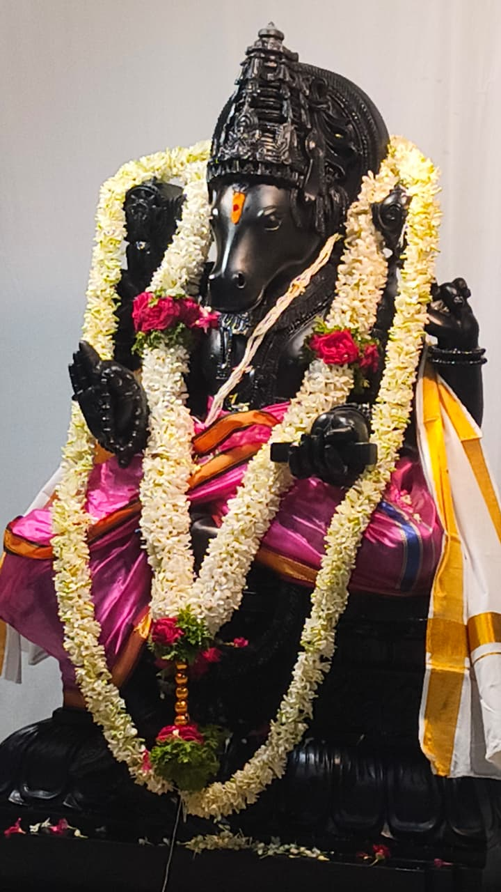

Sri Vidya Hayagreeva.
Jñānānanda-mayam devam nirmala-sphaṭikākṛtim — ādhāram sarva-vidyānām hayagrīvam upāsmahe.
We meditate upon Hayagreeva — embodiment of knowledge and bliss, pure as crystal, the very ground of all learning.

By the hands of Adithya yogiraj.
The vigraha has been shaped by the celebrated sculptor Adithya yogiraj — the same hands that carved the Bala Rama murti installed at the new Ayodhya temple. To work in Krishna shila is to coax life from stone; the sculptor speaks of it as sadhana, not craft.
The stone was chosen for its even grain and its deep, almost wet, black lustre. Months of careful carving — beginning with the kirīta and ending with the toes of the lotus pedestal — have produced the form you now see.


Why Hayagreeva, here?
The villagers of Rampura have always sent their children to the towns nearby for learning. Adding Hayagreeva — the deity of knowledge — to the temple is the village's prayer for those children: clarity of mind, the patience to study, the courage to speak. He stands beside Anjaneya, who is himself the chief of learners. Two forms of wisdom, in one small village.
Because He is the giver of vidya, the temple performs Aksharabhyasam before Him — a child's first letters, traced under the deity of learning.
Aksharabhyasam — a child's first letters →